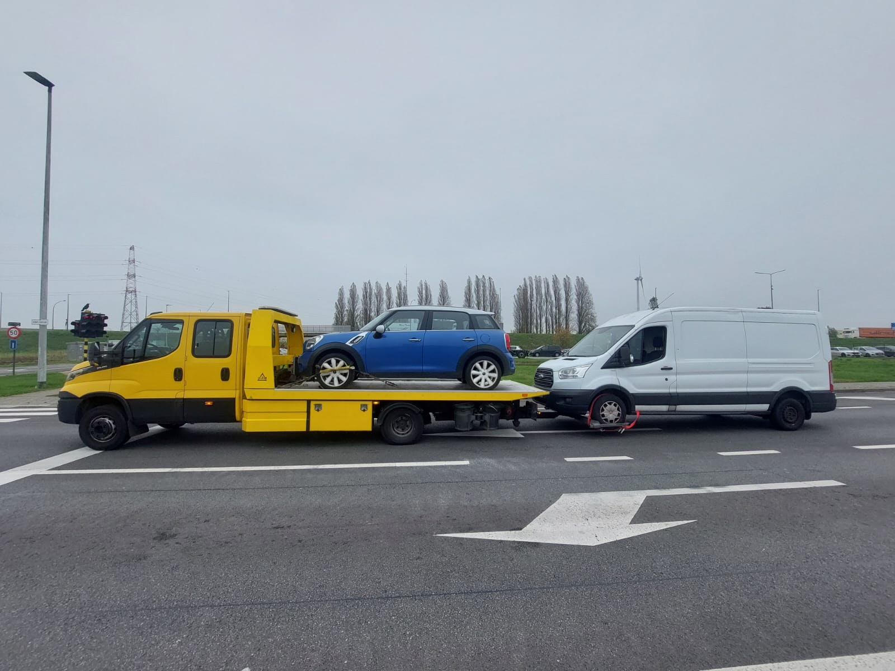

Abschleppdienst und Pannenhilfe
Abschleppdienst und Pannenhilfe in ganz Deutschland
Sie stehen mit Ihrem Fahrzeug am Straßenrand und brauchen jemanden, der die Hilfe organisiert? Rufen Sie jetzt an oder schreiben Sie per WhatsApp. Wir koordinieren sofort einen Partner in Ihrer Nähe, mit Schwerpunkt rund um Köln und zwischen Karlsruhe und Offenburg.
- Rund um die Uhram Telefon und per WhatsApp, kein Ticketsystem
- BundesweitPartner in Ihrer Nähe
- Vier SprachenDeutsch, Niederländisch, Französisch, Englisch

Wo brauchen Sie Hilfe?
Wählen Sie Ihre Region oder Ihre Stadt. Dort finden Sie Ausfahrten, Straßen und Hinweise für Ihren Standort.
Köln & Umgebung
Pannenhilfe und Abschleppen in Köln, mit Seiten zu den neun Stadtbezirken, dem Autobahnring und den Zubringern A1, A3, A4, A57, A59 und A555.
Zur Kölner Seite → Region 2Karlsruhe & Mittelbaden
Pannenhilfe zwischen Karlsruhe, Baden-Baden, Achern und Offenburg, mit allen Ausfahrten der A5 von Karlsruhe bis Lahr.
Zur Seite Mittelbaden →Weitere Orte: alle Städte, Bundesländer und Pannenhilfe auf der Autobahn.
Was passiert nach Ihrem Anruf?
Sie schildern kurz, was passiert ist, und nennen uns Ihren Standort, am schnellsten per WhatsApp. Wir klären mit Ihnen Fahrzeug und Ziel und sagen Ihnen den Preis, bevor jemand losfährt. Danach organisiert unser Partner vor Ort die Hilfe, und Sie bleiben mit uns in Kontakt, bis alles erledigt ist.
So arbeiten wir
Faster hat seinen Sitz in Antwerpen (Belgien). In Deutschland arbeiten wir mit Partnern zusammen, die den Einsatz vor Ort übernehmen, zum Beispiel in Köln, Karlsruhe, Baden-Baden, Achern und Offenburg, aber auch in vielen weiteren Städten von Hamburg bis München. Sie erreichen uns rund um die Uhr, wir koordinieren die Hilfe und bleiben Ihr Ansprechpartner am Telefon.
Wenn Sie Zeit haben, lesen Sie unsere Ratgeber: Sie erklären, was bei einer Panne zu tun ist, worauf es beim Abschleppen ankommt und wer nach einem Unfall zahlt.
Häufige Fragen
Wie schnell sind Sie da?
Was kostet die Hilfe?
Sind Sie auch nachts und am Wochenende erreichbar?
Helfen Sie auch außerhalb von Köln und Karlsruhe?
Wo sitzt Faster, und wer fährt zu mir?
Direkt erreichbar
Telefon und WhatsApp: rund um die Uhr.